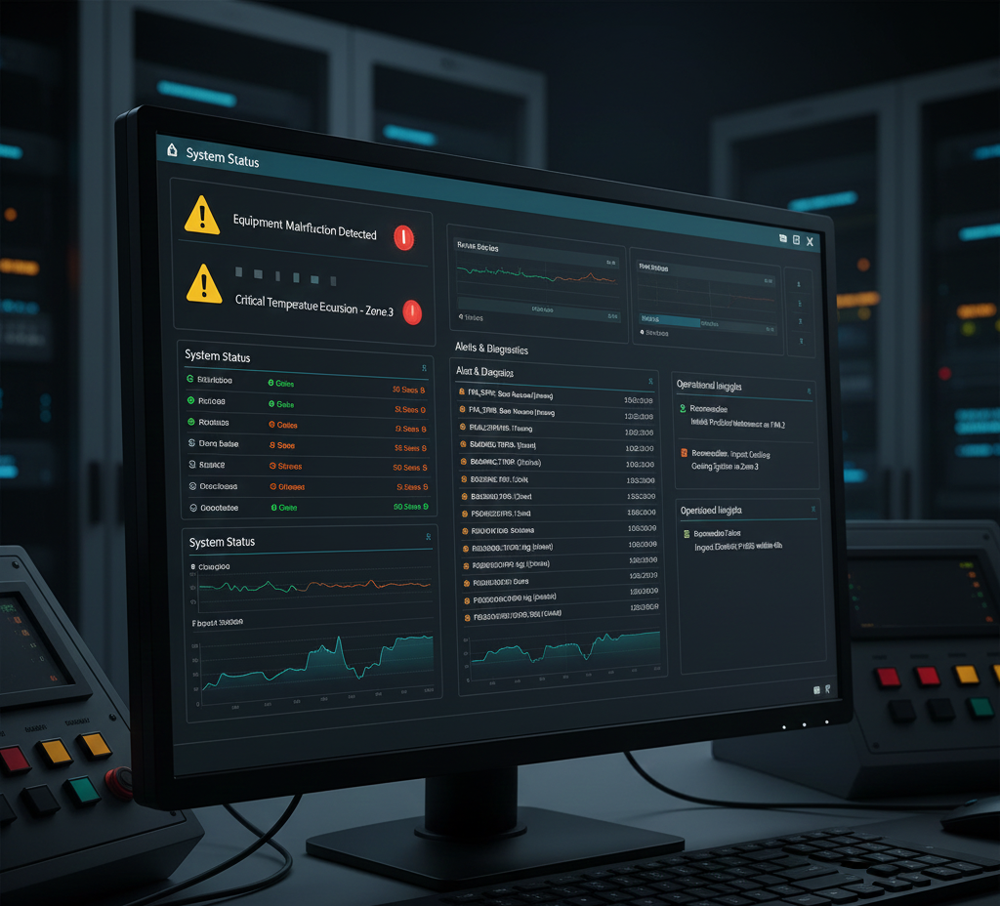
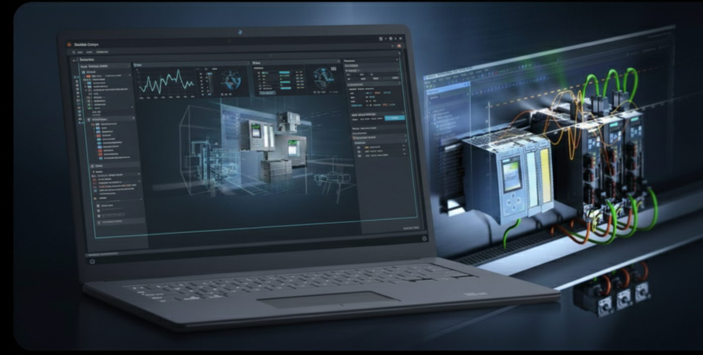
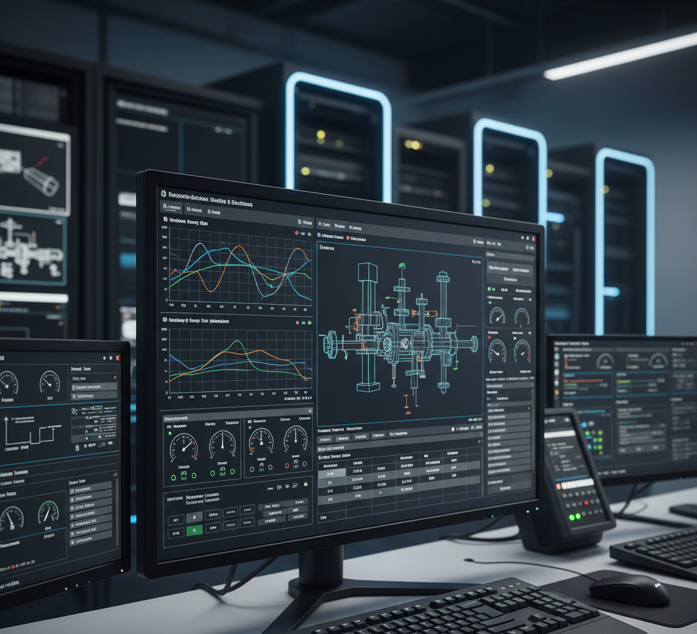
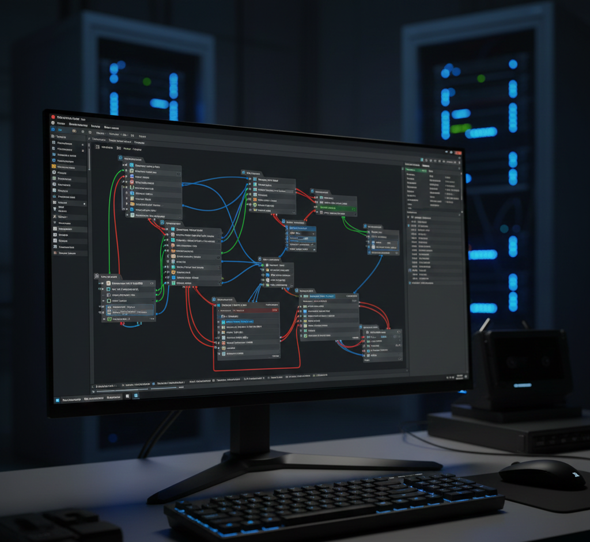
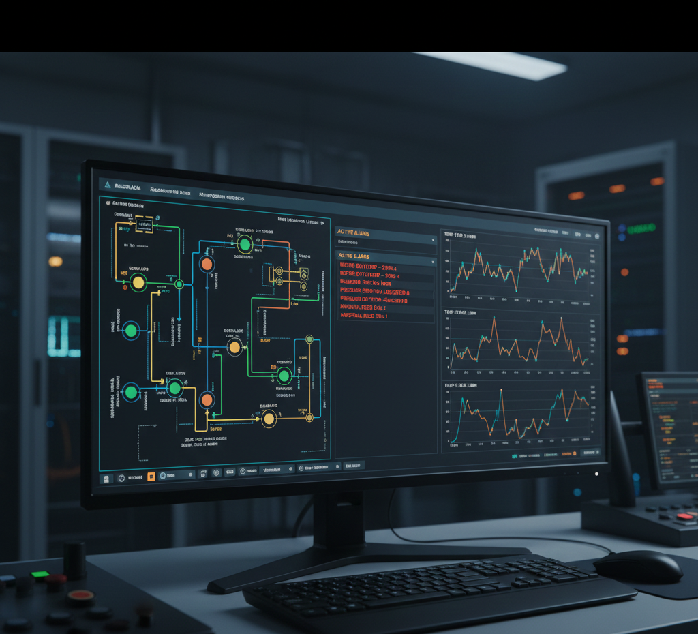

Plataforma Industrial · SCADA Web · Gemelo Digital
Digital2Real
Gemelo Digital para la Industria 4.0
Simula, monitoriza y valida sistemas industriales antes de su despliegue en planta. Plataforma orientada a demostración técnica e integración IT/OT.
Highlights
- SCADA Web interactivo
- Integración Node-RED / OPC UA (roadmap)
- Arquitectura IT/OT escalable
Qué aporta Digital2Real

Simulación y validación
Pruebas y comisionamiento digital antes de planta.

Integración IT / OT
PLC, SCADA, OPC UA y middleware industrial.

Operación asistida
Estados, alarmas y soporte operativo.
Arquitectura IT / OT
Frontend web industrial conectado a middleware Node-RED y servidor OPC UA como modelo de datos común.
Demos técnicas

Demo SCADA Web
Control y monitorización.

Demo IT/OT
Node-RED + OPC UA.
Diagnóstico
Eventos y estados del sistema.